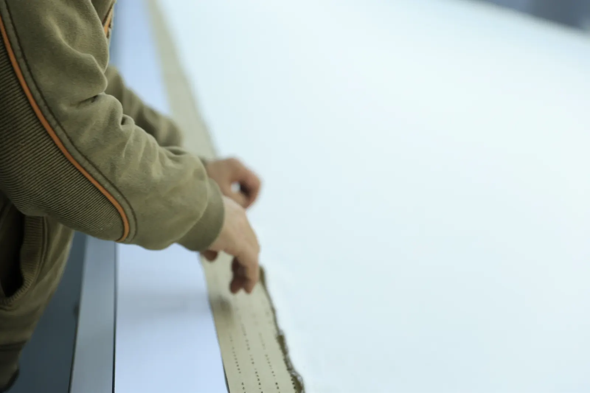
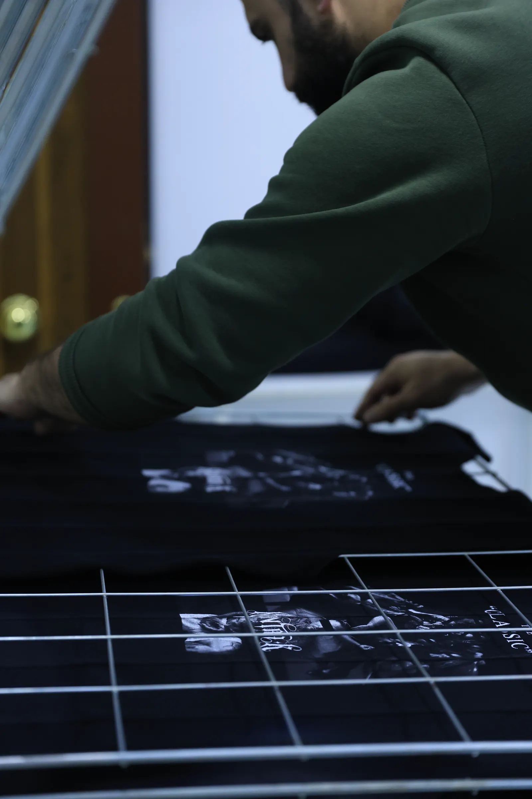

Kapüşonlu üstler ve sweatshirtler
Konfor, form, kumaş ağırlığı ve detay birlikte düşünülür.
ÜRÜNLER VE GELİŞTİRME
Ürünü görsel referansınıza, kumaş ihtiyacınıza, istenen detaylara ve hedef pazara göre geliştirir; onaylanan parçayı gerçeğe dönüştürürüz.
Kapüşonlu üstler, sweatshirtler, tişörtler ve spor giyim ürünleri geliştiriyoruz. Her parça brife, kumaşa ve istenen sonuca göre şekillenir.
Konfor, form, kumaş ağırlığı ve detay birlikte düşünülür.

Kalıp, doku ve baskı kararları son ürünü tanımlar.

Aktif kullanım ve belirgin görsel kimlik için geliştirilen ürünler.
Görsel referans yalnızca başlangıçtır. Kumaş, siluet, baskı ve son işlem fiziksel üründe birlikte çalışmalıdır.




Ürünü elde değerlendirebilmeniz için numune hazırlarız: kumaşı, görünümü, ölçüsü ve detayları. Geri bildirim sonraki çalışmayı ve son üretim numunesini şekillendirir.
Süreci görünBaskı ve son işlem kararları ürüne kimlik verir. Bu kararları numunede geliştirir, onaylanan yönü üretime taşırız.


Bir fotoğraf, çizim veya ürün brifi geliştirme konuşmasına başlamak için yeterli.